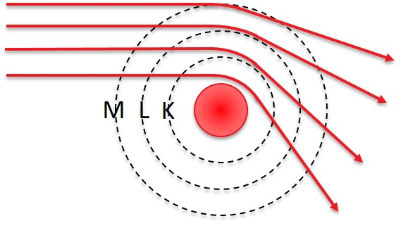
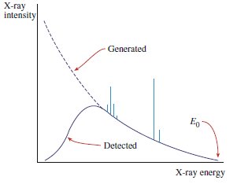

Chapter 4: Spectroscopy
Bremsstrahlung¶

part of
MSE672: Introduction to Transmission Electron Microscopy
Spring 2026 by Gerd Duscher
Microscopy Facilities Institute of Advanced Materials & Manufacturing Materials Science & Engineering The University of Tennessee, Knoxville
Background and methods to analysis and quantification of data acquired with transmission electron microscopes.
Load relevant python packages¶
Check Installed Packages¶
[1]:
import sys
import importlib.metadata
def test_package(package_name):
"""Test if package exists and returns version or -1"""
try:
version = importlib.metadata.version(package_name)
except importlib.metadata.PackageNotFoundError:
version = '-1'
return version
if test_package('pyTEMlib') < '0.2024.2.3':
print('installing pyTEMlib')
!{sys.executable} -m pip install --upgrade pyTEMlib -q
print('done')
done
First we import the essential libraries¶
All we need here should come with the annaconda or any other package
[2]:
%matplotlib widget
import matplotlib.pyplot as plt
import numpy as np
import sys
import os
if 'google.colab' in sys.modules:
from google.colab import output
from google.colab import drive
output.enable_custom_widget_manager()
__notebook_version__ = '2026.01.22'
print('notebook version: ', __notebook_version__)
notebook version: 2026.01.22
Bremsstrahlung¶
The Bremsstrahlung causes the background the characteristic X-ray peaks are sitting on.
Because of the repulsion a fast electron by the negative electron cloud in a solid. such an electron will be de-accelerated or deflected. Any acceleration (negative or positive) is related with a photon (possibly only as an exchagne particle which is the basis of Quantum Eletrodynamics).

The energy loss in the braking of an electron will cause the emission of Bremsstrahlung (braking radiation). The energy of the photon of this electromagnetic radiation is directly the photon energy.
Thus the Bremsstrahlung spans the energies from the incident electron’s energy down to a practical limit of about 100eV. The Bremsstrahlung is therefore sometimes refered to as X-ray continuum.
The Bremsstrahlung is anoistropic, peaked in the forwad direction of the incident electron.
Kramer’s formulation of Bremsstrahlung¶
Kramers’ formula for Bremsstrahlung is the most basic (and not very accurate) description of Bremsstrahlung vs energy:
K – A constant,
Z – The average atomic number of the specimen,
E0 – The incident beam energy,
I – The electron beam current,
E – The continuum photon energy.
The factor K in Kramers’ law actually takes account of numerous parameters. These include
Kramers’ original constant.
The collection efficiency of the detector.
The processing efficiency of the detector.
The absorption of X-rays within the specimen.
[3]:
Z = 26
E_0 = 10 # keV
K = -4000
I = 1
E = energy_scale = np.linspace(.1,30,2048) #in keV
N_E = I*K*Z*(E-E_0)/E
Z2 = 58
E_02 = 10 # keV
N_E2 = I*K*Z2*(E-E_02)/E
plt.figure()
plt.plot(energy_scale, N_E, label= f'{E_0} keV');
plt.plot(energy_scale, N_E2, label= f'{E_02} keV');
plt.axhline(y=0., color='gray', linestyle='-', linewidth = 0.5)
plt.ylim( -1e5, 1e6)
plt.legend();
Please change the atomic number Z and the acceleration voltage E_0 in the code cell above to see the influence of these values on the Bremsstrahlung.
Bremsstrahlung and EDS Background¶
At low energies, this background above does not look anything like the background we obtain in the EDS spectrum.
This is due to the response of the EDS detector system

.The effect of the detector system will be discussed in the Detector Efficiency notebook.